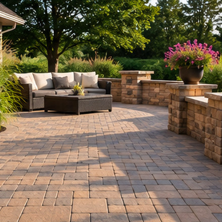

Retaining Walls

Retaining walls can turn a sloping yard into more usable space, separate planting beds or provide support where the ground level changes. Their design must account for much more than how the wall looks.
This page explains typical wall applications and why drainage, soil and height should be discussed with a qualified local professional.
Common Landscaping Applications
Sloped Gardens
Where site conditions allow, terraced areas can create more practical planting or outdoor gathering spaces.
Raised Beds and Borders
Low landscape walls can define flower beds, pathways and transitions between materials.
Driveways and Walkways
Walls may be used along routes where grade changes must be managed carefully.
Patios and Outdoor Living
Wall features can help organize adjoining spaces and, where properly designed, incorporate compatible seating or steps.
Design and Material Options
Segmental concrete wall blocks are commonly used in landscaped settings and offer several colours and face textures. Natural stone offers a different appearance and may call for specialized installation methods. Engineered or reinforced wall systems may be appropriate where retaining height, surcharge or ground conditions require them.
Some small walls are mainly decorative; a true retaining wall resists the force of soil behind it. A particular material should not be selected solely on appearance when it is supporting a significant load.
Important Site Considerations
- Drainage: Water pressure behind a wall can be a major factor in failure. Backfill, outlets and drainage provisions require appropriate design.
- Soil and foundations: Ground composition, frost conditions, excavation and compaction influence stability.
- Height and nearby loads: Driveways, structures, fences or slopes near a wall may change engineering requirements.
- Permits and boundaries: Local rules, setbacks and neighbouring property considerations should be checked before construction.
- Steps and finishes: Curves, caps, corners, integrated lighting and transitions to paving require coordination during planning.
Walls that are tall, carry substantial loads or show movement, cracking or bulging should be assessed by an appropriately qualified professional. General website information is not a substitute for structural design or inspection.


How to Discuss a Retaining Wall Quote
When contacting a provider, explain where the wall is needed, the approximate length and height, any drainage issues, and what lies above and below the wall. Photos and measurements may help the provider prepare for a site visit, but an on-site assessment may still be necessary.
Ask who will evaluate soil and drainage, whether permits or engineering may be required, how excavation and backfill will be handled, and what the proposed written scope includes. An estimate, appointment or service cannot be guaranteed by this referral website.